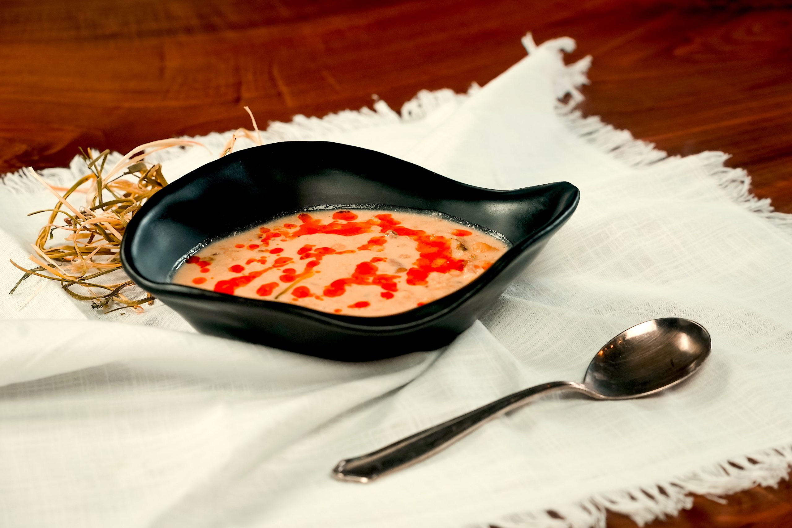

Leziz Kurut Çorbası
Sıcacık!
Denemeye değer geleneksel bir yoğurt-peynir çorbası
- Malzemeler -
- 400 ml et suyu
- 600 ml çözünmüş Kurut
- 1 soğan
- 1 avuç erişte
- 1 demet nane
- 2 diş sarımsak
- Birkaç dal maydanoz
- 150 gr haşlanmış yeşil mercimek
- 1 yemek kaşığı domates salçası
- Tuz
- Yağ
- Nasıl Yapılır? -
- Soğanı ince ince doğrayın ve biraz sıvı yağ ile soteleyin.
- Yumuşayınca domates salçası, tuz ve suyu ekleyip kaynamaya bırakın.
- Erişte, mercimek ve ince kıyılmış nane ve maydanozu karışıma ekleyin ve erişteler sertleşinceye kadar pişirin.
- Son olarak erimiş olan Kurut'u ekleyin, son bir kez kaynatın ve altını kapatın.
- Sarımsakları ezin ve bir kısmıyla çorbayı servis edin.